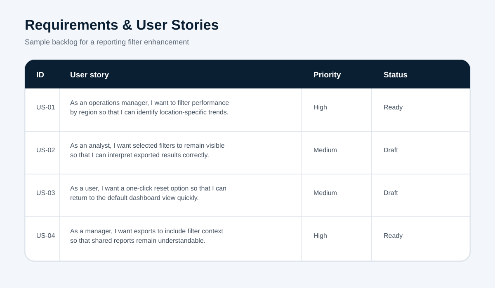

Feature
Add regional filters, persistent filter visibility, one-click reset and filter context in exported dashboard reports.
Functional requirements
| ID | Requirement | Priority |
|---|---|---|
| FR-01 | The dashboard shall allow users to select one or more regions. | Must |
| FR-02 | The dashboard shall display all active filters above the report canvas. | Must |
| FR-03 | The user shall be able to clear all filters with one action. | Should |
| FR-04 | Exports shall include the selected filter context and export timestamp. | Must |
Acceptance criteria — US-01
- Given the user has access to the dashboard, when one or more regions are selected, then all visuals update to the chosen region set.
- Given filters are active, when the user opens another report page, then the selected region filters remain applied.
- Given no region is selected, when the report loads, then the dashboard displays the permitted enterprise-wide view.
Non-functional considerations
Filtered pages should load within the agreed performance threshold, respect row-level security and meet basic keyboard accessibility expectations.
Assumption: User permissions and region access rules already exist and are managed outside this feature.